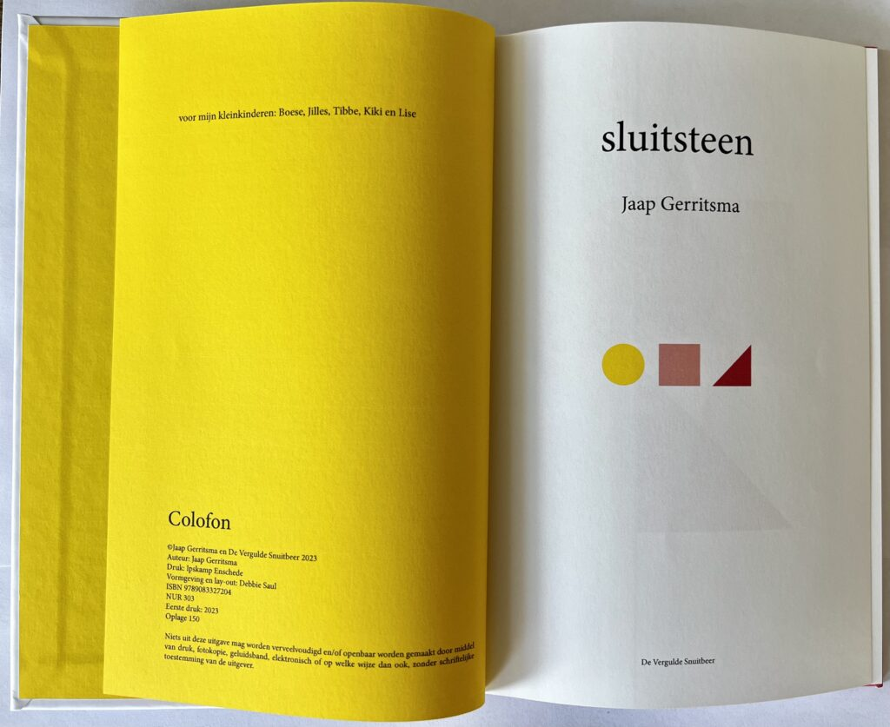

Sluitsteen
Sluitsteen: verhalenbundel / ©2023 Jaap Gerritsma - De Vergulde Snuitbeer/ ISBN 9789083327204
Voor 22,50 euro sturen we sluitsteen op. Mail naar paul@deverguldesnuitbeer.nl
Gerritsma schreef eerder columns, romans, sprookjesboeken en wetenschappelijk werk. Met deze bundel kijkt hij terug op oude vriendschappen en romantische episodes.
Aart Kramer
Jaap heeft mooie verhaaltjes geschreven, miniatuurtjes. Heel menselijk en ingetogen. Prima.
Remi Verduin
Het spannendste vond ik het verhaal van de treinreis door Mexico, mooi opgebouwd, met het onverwachte einde door de dame die uit beeld verdwijnt ….
Ik leer veel mooie Nederlandse woorden van jou. Overigens kon je het kennelijk niet laten om ook in dit boek het woord “tabernakel”, nu in een wat andere setting, te gebruiken.
Derek Meulman
Knap beschreven verhalen keurig gedaan ik heb er bijzonder van genoten.
Een zorgvuldige schrijfstijl en keurig gebruik van medische terminologie komt ook hierin tot uiting.
Ook intense gevoelens weet jij goed te beschrijven in heldere stijl. Het zijn korte verhalen doch met een duidelijke lading.
Even schoten de gedachten door mijn hoofd van de zeer korte verhalen van de nog niet lang geleden overleden schrijver A.L.Snijders. Zijn werk en vooral ook zijn vertelling op de zondagochtend radio vond ik bijzonder mij staat ook nog bij hoe hij de lock down in Corona tijd beschreef op zijn verborgen boerderijtje in de Achterhoek.
Dit zijn meer iconisch humoristische verhalen van jouw hand, ik zie meer realistische gebeurtenissen waarbij ik als lezer meer verantwoordelijkheidsgevoel waarneem.
Ik voel mij betrokken bij jouw beschrijvingen.
Snijders zie ik meer als iconische en humoristisch.
Debbie Saul
Ik heb het boekje van Jaap Gerritsma gelezen. Wat schrijft hij leuk! Af en toe gebruikt hij wel moeilijke woorden, die ik moet opzoeken. Terwijl ik het las dacht ik, de vormgeving zou wel eens van Debbie kunnen zijn. En ja hoor, jouw naam in het colofon 😀. Ik wist het echt niet.
Rob Misdorp
Om de beginnen : de titel kan op verschillende manieren worden uitgelegd. De meest voor de hand liggende is het zinnebeeldige architectonische beeld : het verbindingsstuk tussen twee boog helften in een gewelf of raam constructie. Het willen verbinden dat is een centraal thema in jouw boek, geschreven voor jouw vijf kleinkinderen. Ik ken jouw pas sinds kort, maar zover ik kan zien heeft het boek sterk auto-biografische kenmerken, die jou willen verbinden met personen en met gebeurtenissen in het verleden. Dat geeft een blik op jouw leven. Je beschrijft een interessant leven, toepassing van jouw medische kennis en kunde in verschillende landen en culturen. Die bijbehorende blikverruiming verschaft de lezer een interessant decor waartegen je jouw verhaal beschrijft. Een voorbeeld in “Toen sloeg ze haar armen om me heen” : het Celebes decor van de Toraja’s met hun huizen als schepen waarmee ze eens vanuit de Pacific naar Celebes zijn gevaren en nu hun doden op bijzondere wijze verankeren en vereren en dan als een kwinkslag: de mol in de grot van het dodenrijk, met molleklauwen in het donker gravend naar hoop, naar het licht. Dat is een prachtig voorbeeld van jouw scherpzinnige en tevens verfijnde en oorspronkelijke manier van schrijven!
Daarnaast verschaft jouw klassieke en medische opleiding en achtergrond ook de basis voor interessante beschrijvingen zoals in het eerste vertelling: “Bericht uit het dodenrijk” , voorbeeld van een prachtig beeld dat je zo levendig schetst: : “Al die boosheid van jaren etste zijn huid en vezels zoals grond levenloos kan verdorren door eindeloos met mest en glyfosaat in de bodem te krassen” . Dit is niet alleen stilistisch prachtig geschreven maar verbindt ook ons Nederlandse, te sterk geïntensiveerde en te ver geïndustrialiseerde landbouw en veeteelt met de dood. En dat allemaal in een zin, bravo!
“Strange fruit ” is een voorbeeld van verlangen om integrale aandacht voor mensen/patiënten (mens heeft meer nodig dan alleen maar een pilletje) als basis voor een betere, meer in evenwicht zijn samenleving en zo niet dat de huidige ontwikkelingen dan tot een desastreuze toekomst (Strange frute) zal leiden.
De beschrijving van de cisterciënzer broederschap gericht op gezamenlijk het land te ontwikkelen om goede producten te produceren staat in schril contrast met onze huidige methode van het produceren van producten. Het verlangen naar verbondenheid , naar samenhangende kameraadschap/broederschap, naar een toekomst met kansen voor velen, staat inderdaad in schril contrast met de gefragmenteerde maatschappij waarin de, alleen op geld gerichte markt sector de publieke, integrale instituties heeft vermorzeld. In Metamorfose beschrijf je het markt mechanisme ten top: reorganisaties , bezuinigingen, het creëren van crisis na crisis heeft geleid tot een publieke sector waarin geen/te weinig kennis en personeel meer aanwezig is om oplossende maatregelen daadwerkelijk uit te voeren. En dat is inderdaad de meest fnuikende conclusie: Hoe komen we uit deze situatie. Hoe kunnen we weer daadkrachtig maatregelen nemen om de duurzame, integrale doelen metterdaad te bereiken in Nederland, in de EU, in de wereld. Het lijkt te ver weg, de huidige politiek constellaties in aanmerking nemend.
Een paar hoofdstukjes zoals Fun en Gekipt vond ik iets minder.
Kortom ik vind jou boek zeer de moeite waard en ik denk dat je een selectie van hoofdstukken zou moeten maken en die aan een groter publiek moet aan bieden.
Andre Witlox
Complimenten, het boekje leest 'als een trein' en weet te boeien. De dierbare figuren uit de mythologie maakten me direct nieuwsgierig naar het vervolg.
Ik herken tussen de regels door Jaap in uitingen, gedragingen en situaties. Het komische voorval met het kalf van Tony; alsof ik er zelf bij was.
Het is een goed verzorgd boekje Jaap en alleszins de moeite waard om te lezen. Ik gun je er veel succes mee en zeker heb je er zelf veel aan gehad alles te schrijven.
Lees alle recensies op Hebban.nl

'Ze draaide zich om en met een merenque dans verdween ze wit mijn leven met haar paardenstaart schuddend achter zich aan, mij ontgoocheld achter-latend met een teleurgestelde blik op de Tempel der Inscripties'
'De boer naar binnen. Iedereen kijkt gespannen. Wie komt het eerst, de boer of de koe?'
'Nog steeds voel ik die diepe onpeilbare leegte, nu kan ik haar niet meer vertrouwen'
'Zijn gewei van wel twee meter leek aan het uiteind op geopende handen'
'Jacobus, ik wil met je praten over al dat bier dat je drinkt. Ik mis de gezellige avondjes met gewoon een wijntje. Heb je soms iets te verbergen?'
'Ik bracht het er redelijk van af, toch beschroomd om naast een wildvreemde vrouw te gaan liggen.'
'Ik was uitgeput na die dag en moest alle indrukken verwerken die me hadden gesloopt'
Muziek
Frank van Velthoven was erg geïnspireerd door het verhaal in de bundel “broederschap”. De Hoofdpersoon heette Jacobus, hijzelf ook en de schrijver droeg die naam. Dat vroeg om een compositie. En al helemaal omdat de levensproblemen in dat verhaal hem raakte en het feit dat het bier steeds rijkelijk vloeide. Alle Jacobussen hadden steeds meer dorst.
Frank van Velthoven